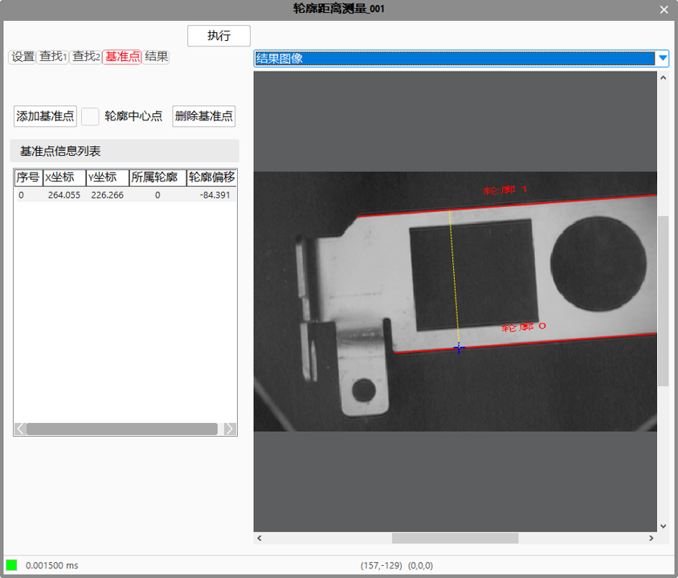
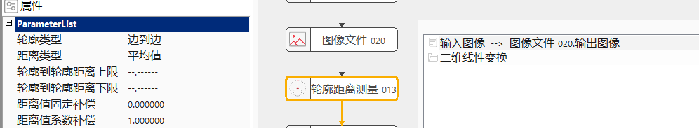
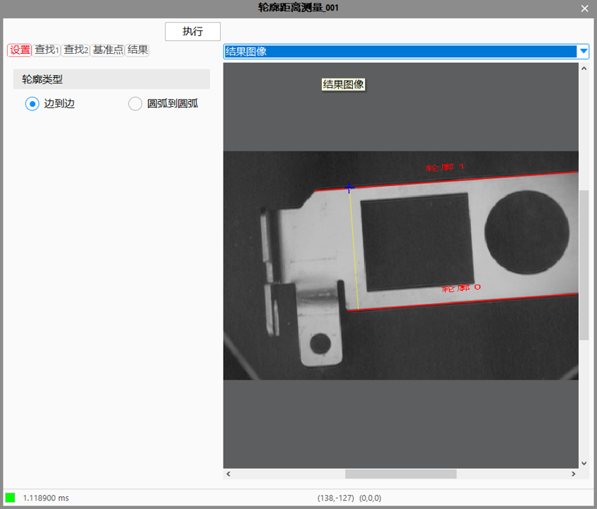
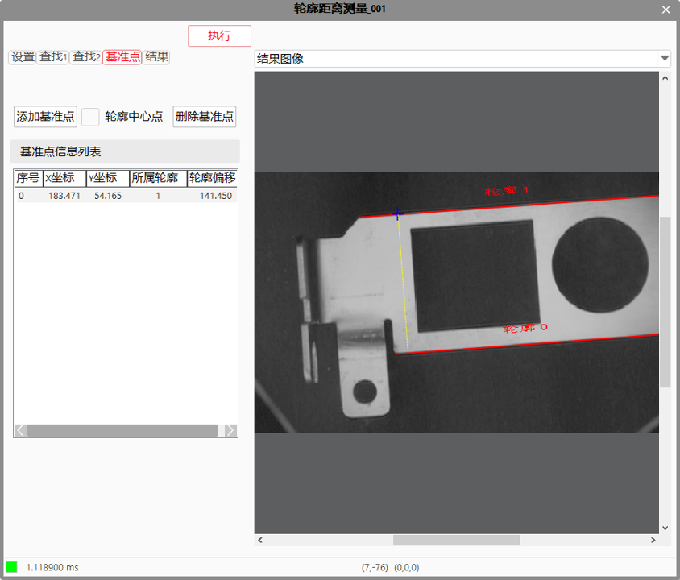
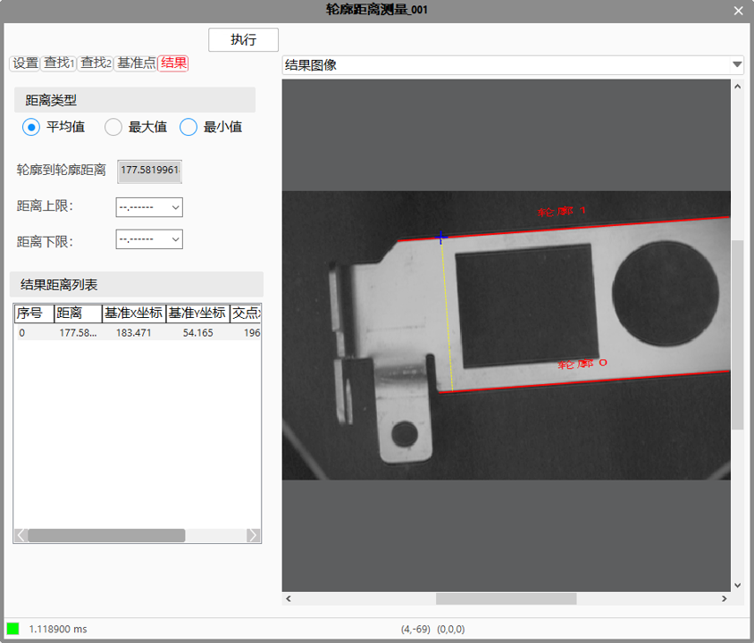
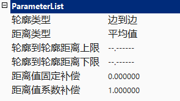
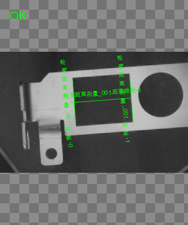
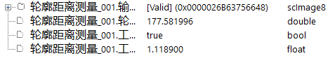

轮廓距离测量工具主要用于轮廓之间的距离测量，主要支持边到边和圆弧到圆弧之间的距离。

常用于检测不规则目标物间的距离是否符合要求。
距离计算方法
1、提取图像中的两条轮廓线或圆弧，即轮廓A、轮廓B；
2、设定基准点，选取轮廓A上基准点PA0，选取轮廓B上的基准点PB0;（可选择多个基准点PAnPBn）
3、计算PA0到轮廓B的距离La0b，计算PB0到轮廓A的距离Lb0a，放入距离集合SetL。（每个基准点对应一条距离线）
4、对两条直线进行处理，根据“距离类型”得到距离集合SetL的平均值或最大值或最小值，即为轮廓到轮廓距离。


设置轮廓类型
查找轮廓1，轮廓2

确定基准点

选择距离类型，执行，查看结果输出

轮廓类型
设置轮廓类型为边到边或圆弧到圆弧，注意，修改轮廓类型后，需要重新进行上一步轮廓查找。
距离类型
设置距离类型，平均值、最大值、最小值。
轮廓到轮廓距离上限、轮廓到轮廓距离下限
对于输出参数轮廓到轮廓距离的有效范围进行设定，可取值范围为[0, 999999.999999]，另可设置为"–.——“,表示对轮廓到轮廓距离上限或下限不进行限定。
使用距离值上限或/和距离值下限对轮廓到轮廓距离数值的有效范围进行设定后，执行此测量工具。
当输出结果轮廓到轮廓距离在设定的有效范围内时，显示工具执行结果成功；否则，显示工具执行结果失败。


无
| 参数名称 | 参数说明 |
|---|---|
| 输入图像 | 要进行轮廓测量的图像。 |
| 二维线性变换 | 可选项，是否对输入和输出图像进行二维线性变换。 |
| 轮廓类型 | 主要有两种类型：边到边和圆弧到圆弧。边到边的指的线性轮廓，圆弧到圆弧指的是曲线轮廓。 |
| 距离类型 | 主要有三种类型：平均值，最大值和最小值。平均值就是最大值和最小值之间的平均值。最大值，就是轮廓的基准点到另一个轮廓的最短距离，因为有两个轮廓和两个基准点，所以会存在两个值，较大的值为最大值，较小的值为最小值。最大值和最小值有可能相等。 |
| 轮廓到轮廓距离上限 | 取值范围[0,999999.999999]，输出参数 轮廓到轮廓的距离 的上限阈值。 |
| 轮廓到轮廓距离下限 | 取值范围[0,999999.999999]，输出参数 轮廓到轮廓的距离 的下限阈值。 |
| 距离值固定补偿 | 测量结果固定补偿。一般为0，用于补偿成像等系统误差。 |
| 距离值系数补偿 | 测量结果系数补偿。一般为1，用于补偿成像等系统误差。 |
| 高级界面 | 有 |
| 设置 | 对轮廓类型进行设置，见属性窗口的轮廓类型。 |
| 查找1/查找2 | 这两个选项卡就是设置两个轮廓的。 |
| 智能设置 | 会出现各个轮廓，这时候可以选择想要测量的轮廓，只要点击一下就可以。2个轮廓要分别进行设置。 |
| 边缘极性 | 可以参考找线工具的里面的极性相关属性。 |
| 对比度阈值 | 可以参考找线工具的里面的对比度阈值相关属性。 |
| （高级选项）展开 | 可以设置边缘选择、局外点比例、是否启用掩膜和是否手动设置卡尺。 |
| 基准点 | 基准点就是计算该点到另一个轮廓的最短距离。 |
| 添加基准点 | 点击添加基准点，然后在已经选择好的轮廓的某点设置基准点，至少设置一个基准点，可以设置多个基准点，每个基准点都会去计算到另一个轮廓的最短距离。 |
| 轮廓中心点 | 是否将轮廓的中心点作为基准点。 |
| 删除基准点 | 选择基准点信息列表的某一行，选中，再点击删除基准点，可以进行删除选中的基准点。 |
| 距离类型 | 参见属性面板的距离类型。 |
| 轮廓到轮廓的距离 | 根据距离类型，显示相关的距离。 |
| 执行 | 根据选择好的轮廓和基准点，对轮廓距离进行计算。 |
| 参数名称 | 参数说明 |
|---|---|
| 输入图像 | 要进行轮廓测量的图像。 |
| 轮廓到轮廓距离 | 根据距离类型，显示相关的距离。 |
| 工具执行结果 | 工具执行结果，执行成功显示“OK”，执行失败显示“NG”，同监视窗口的执行结果参数。 |
| 工具执行时间 | 工具执行时间。 |
参见“\Samples\轮廓距离测量.gvp”。